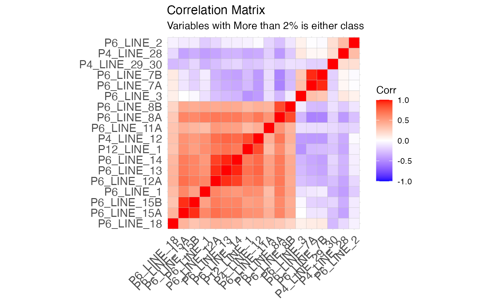

Making Governance Scores
Olivia Beck
2024-03-06
Source:vignettes/making-gov-scores.Rmd
making-gov-scores.Rmd
#Needed libraries for functionality
library(data.table)
library(tidyverse)
library(polycor)
library(psych)
## Libraries for Presentation
library(kableExtra)
library(Matrix)
library(ggcorrplot)How to make a governance score
Here we outline the procedure employed to generate governance scores through factor analysis. Initially, we identify the relevant segments within the 990 efile data containing governance-related information. We then standardize the data into a set of binary variables and conduct a factor analysis. Finally, we calculate governance scores utilizing the loading and weights we derived from the factor model.
We use the 2018 990 efile data as our training data for this model.
Step 0: Identify relevant 990 questions
We first list all questions in the 990 series that we feel indicate governance practices. The questions here have been organized by Part/Schedule of the 990 they are found in.
Part IV
12a. Whether obtained separate, independent audited financial statements (y/n)
12b. Whether organization included in consolidated, independent audited financial statements (y/n)
28a. Whether the organization a party to a business transaction with a current or former officer, director, trustee, or key employee (y/n)
28b. Whether the organization a party to a business transaction to with a family member of a current or former officer, director, trustee, or key employee (y/n)
28c. Whether the organization a party to a business transaction to with an entity of which a current or former officer, director, trustee, or key employee was an officer, director, trustee, or direct or indirect owner (y/n)
Did the organization receive more than 25,000 in non-cash contributions? If yes, complete schedule M. (y/n)
Did the organization receive contributions of art, historical treasures, or other similar assets or qualified conservation contributions? If yes, complete schedule M. (y/n)
*Note that if any “yes” to 29 or 30, org is required to indicate whether it has a “gift acceptance policy” in Schedule M, item 31 (y/n)
Part VI
1a. Number of Voting Members
1b. Number of independent voting members
1.schedule-O. If there are material differences in voting rights among members of the governing body, or if the governing body delegated broad authority to an executive committee or similar committee, explain on Schedule O.
- Family relationship or business relationship (y/n)
- Whether used a management company or other person to perform any management duties (y/n)
- Whether made any significant changes to governing documents (y/n) 5.Whether any significant diversion of assets (y/n)
- Whether have members or stockholders (y/n)
7a. Whether have any persons who had power to elect or appoint members(y/n)
7b. Whether decisions reserved to members other than governing body (y/n)
8a. Whether documented the meetings by the governing body (y/n)
8b.Whether documented the meetings by each committee (y/n)
10a. Whether have local chapters, branches, or affiliates (y/n)
10b. If yes to 10a, whether have a written policies governing the activities for local chapters, branches, or affiliates (y/n)
11a. Whether provided a copy of Form 990 to all members before filing the form (y/n)
12a. Whether have a written conflict of interest policy (y/n)
12b. Whether officers, directors, key employees required to disclose annually interests that could give rise to conflicts? (y/n)
12c. Whether regularly and consistently monitor and enforce compliance with the policy (y/n)
- Whether have a written whistleblower policy (y/n)
- Whether have a written document retention and destruction policy (y/n)
15a. Whether have a process for determining compensation of the CEO, executive director, or top management officials include a review and approval by independent persons, comparability data, and deliberation decision (y/n)
15b. Whether have a process for determining compensation of other officers or key employees include a review and approval by independent persons, comparability data, and deliberation decision (y/n)
16a. Whether invest in, contribute assets to, or participate in a joint venture or similar arrangement (y/n)
16b. If yes 10 16a, whether have a written policy or procedure to evaluate its participation in joint venture or similar arrangements (y/n)
- Whether make Forms 1023 (or 1024), 990, 990-T available for public inspection in any of the following forms: Own website, another’s website, upon request, other
Part XII
- Accounting method used to prepare the Form 990 in any of the following forms: cash, accrual, other
2a. Were the financial statements compiled or reviewed by an independent accountant* (y/n)
2b. Were the financial statements audited by an independent accountant* (y/n)
2c. If yes to 2a or 2b, whether have a committee that assumes responsibility for oversight of the audit, review, or compilation of its financial statements and selection of an independent accountant? (y/n)
3a. Was required to undergo an audit or audits (y/n)
3b. If yes, did undergo the required audit or audits (y/n)
Step 1: Download the 990 Data
We read in the raw 990 efile data from each Part/Schedule for the years we are interested in using as the “base-line” for a governance index. In our case, we use the 2018 data.
years = 2018We only pull in the columns pertaining to the questions listed in the previous step. See the NCCS Website for a comprehensive data dictionary.
Part IV
### Part IV
#initialize data
dat_4 <- vector(mode = "list", length = length(years))
#get columns I want
keep_cols_part4 <- c("OBJECTID", "URL", "RETURN_VERSION", "ORG_EIN",
"F9_04_AFS_IND_X", "F9_04_AFS_CONSOL_X",
"F9_04_BIZ_TRANSAC_DTK_X", "F9_04_BIZ_TRANSAC_DTK_FAM_X", "F9_04_BIZ_TRANSAC_DTK_ENTITY_X",
"F9_04_CONTR_NONCSH_MT_25K_X",
"F9_04_CONTR_ART_HIST_X")
for(i in 1:length(years)){
link <- paste0("https://nccs-efile.s3.us-east-1.amazonaws.com/parsed/F9-P04-T00-REQUIRED-SCHEDULES-", years[i], ".csv")
temp <- fread(link, select = keep_cols_part4)
colnames(temp) <- c("OBJECTID", "URL", "RETURN_VERSION", "ORG_EIN",
"P4_LINE_12A", "P4_LINE_12B",
"P4_LINE_28A", "P4_LINE_28B", "P4_LINE_28C",
"P4_LINE_29",
"P4_LINE_30")
dat_4[[i]] <- temp
}
#clean up data
dat_all_4 <-
rbindlist(dat_4) %>%
mutate( year = as.numeric(substr(RETURN_VERSION, 1, 4)))Part VI
### Part VI
#initialize data
dat_6 <- vector(mode = "list", length = length(years))
#get columns I want
keep_cols_part6 <- c("OBJECTID", "URL", "RETURN_VERSION", "ORG_EIN",
"F9_06_INFO_SCHED_O_X",
"F9_06_GVRN_NUM_VOTING_MEMB",
"F9_06_GVRN_NUM_VOTING_MEMB_IND",
"F9_06_GVRN_DTK_FAMBIZ_RELATION_X",
"F9_06_GVRN_DELEGATE_MGMT_DUTY_X",
"F9_06_GVRN_CHANGE_DOC_X",
"F9_06_GVRN_ASSET_DIVERSION_X",
"F9_06_GVRN_MEMB_STCKHLDR_X",
"F9_06_GVRN_PERS_ELECT_MEMB_X",
"F9_06_GVRN_DECISION_APPROV_X",
"F9_06_GVRN_DOC_GVRN_BODY_X",
"F9_06_GVRN_DOC_COMMITTEE_X",
"F9_06_POLICY_CHPTR_AFFIL_X",
"F9_06_POLICY_CHPTR_REFERENCE_X",
"F9_06_POLICY_FORM990_GVRN_BODY_X",
"F9_06_POLICY_COI_X",
"F9_06_POLICY_COI_DISCLOSURE_X",
"F9_06_POLICY_COI_MONITOR_X",
"F9_06_POLICY_WHSTLBLWR_X",
"F9_06_POLICY_DOC_RETENTION_X",
"F9_06_POLICY_COMP_PROCESS_CEO_X",
"F9_06_POLICY_COMP_PROCESS_OTH_X",
"F9_06_POLICY_JV_X",
"F9_06_POLICY_JV_PROC_X",
"F9_06_DISCLOSURE_AVBL_OTH_X",
"F9_06_DISCLOSURE_AVBL_OTH_WEB_X",
"F9_06_DISCLOSURE_AVBL_REQUEST_X",
"F9_06_DISCLOSURE_AVBL_OWN_WEB_X"
)
for(i in 1:length(years)){
link <- paste0("https://nccs-efile.s3.us-east-1.amazonaws.com/parsed/F9-P06-T00-GOVERNANCE-", years[i], ".csv")
temp <- fread(link, select = keep_cols_part6)
colnames(temp) <- c("OBJECTID", "URL", "RETURN_VERSION", "ORG_EIN",
"P6_SCHEDULE_O",
"P6_LINE_1A",
"P6_LINE_1B",
"P6_LINE_2",
"P6_LINE_3",
"P6_LINE_4",
"P6_LINE_5",
"P6_LINE_6",
"P6_LINE_7A",
"P6_LINE_7B",
"P6_LINE_8A",
"P6_LINE_8B",
"P6_LINE_10A",
"P6_LINE_10B",
"P6_LINE_11A",
"P6_LINE_12A",
"P6_LINE_12B",
"P6_LINE_12C",
"P6_LINE_13",
"P6_LINE_14",
"P6_LINE_15A",
"P6_LINE_15B",
"P6_LINE_16A",
"P6_LINE_16B",
"P6_LINE_18_other", "P6_LINE_18_other_web", "P6_LINE_18_req", "P6_LINE_18_own_web")
dat_6[[i]] <- temp
}
#clean up data
dat_all_6 <-
rbindlist(dat_6) %>%
mutate( year = as.numeric(substr(RETURN_VERSION, 1, 4)))Part XII
### Part XII
#initialize data
dat_12 <- vector(mode = "list", length = length(years))
#Keep all columns for part XII
for(i in 1:length(years)){
link <- paste0("https://nccs-efile.s3.us-east-1.amazonaws.com/parsed/F9-P12-T00-FINANCIAL-REPORTING-", years[i], ".csv")
temp <- fread(link)
dat_12[[i]] <- temp
}
#clean up data
dat_all_12 <-
rbindlist(dat_12) %>%
mutate( year = as.numeric(substr(RETURN_VERSION, 1, 4)))Schedule M
#initialize data
dat_M <- vector(mode = "list", length = length(years))
#get columns I want
keep_cols_partM <- c("OBJECTID", "URL", "RETURN_VERSION", "ORG_EIN",
"SM_01_REVIEW_PROCESS_UNUSUAL_X")
for(i in 1:length(years)){
link <- paste0("https://nccs-efile.s3.us-east-1.amazonaws.com/parsed/SM-P01-T00-NONCASH-CONTRIBUTIONS-", years[i], ".csv")
temp <- fread(link, select = keep_cols_partM)
colnames(temp) <- c("OBJECTID", "URL", "RETURN_VERSION", "ORG_EIN",
"PM_LINE_31")
dat_M[[i]] <- temp
}
#clean up data
dat_all_M <-
rbindlist(dat_M) %>%
mutate( year = as.numeric(substr(RETURN_VERSION, 1, 4)))DEVELOPER NOTE We save this version of data in data-raw/data-train-raw.rda.
save(dat_all_4, dat_all_6, dat_all_12, dat_all_M,
file = "data-raw/dat-train-raw.rda")Step 2: Wrangle the 990 Data
We wrangle the 990 data from 0/1, X, t/f, or any other raw coding to a communal “yes/no” response (or other if appropriate) according to the “code book” table the respective subsections presented below.
Part IV
| Line | Variable | Levels |
|---|---|---|
| Line 12A, 12B, 28A, 28B, 28C, 29, 30 | P4_LINE_12A, …, P4_LINE_30 |
|
Part VI
| Line Number | Variable Name | Levels |
|---|---|---|
| Line 1A, 1B | P6_LINE_1A, P6_LINE_1B | integer value |
| Line 2, 3, 4, 5, 6, 7A, 7B, 8A, 8B, 10A, 10B, 11A, 12A, 12B, 12C, 13, 14, 15A, 15B, 16A, 16B | P6_LINE_2, …. , P6_LINE_16B |
|
| Line 18 | P6_LINE_18 |
|
| Line 1 Schedule O | P6_SCHEDULE_O |
|
#remove any unwanted years that may have accidentally appeared
dat_all_6 <-
dat_all_6 %>%
filter(year <= max(years))
#general wrangling
dat_all_6 <-
dat_all_6 %>%
#standardize yes/no answers
mutate(across(paste0("P6_LINE_", c(2:6, "7A", "7B", "8A", "8B", "10A", "10B", "11A", "12A", "12B", "12C", 13, 14, "15A", "15B", "16A", "16B")) ,
~ case_when(
. %in% c("true", "1") ~ "yes",
. %in% c("false", "0") ~ "no",
TRUE ~ .
)) ) %>%
# Line 18
mutate(P6_LINE_18 = case_when(
P6_LINE_18_own_web == "X" ~ "own_website",
P6_LINE_18_other_web == "X" ~ "others_website",
P6_LINE_18_req == "X" ~ "request",
P6_LINE_18_other == "X" ~ "other"
)) %>%
select(-c(P6_LINE_18_own_web,P6_LINE_18_other_web,P6_LINE_18_req, P6_LINE_18_other )) Part XII
| Line Number | Variable Name | Levels |
|---|---|---|
| Line 1 | P12_LINE_1 |
|
| Line 1 | P12_L I N E _1_OTHER_EXPLAIN | If P12_LINE_1 is “other”, then this is what is written for other |
| Line 2a | P12_LINE_2A |
“consolidated basis” is checked
|
|
Line 2b Notes: Something is wrong about this coding. There are many F 9 _ 1 2 _FINSTAT_AUDIT_X == FALSE, But F9_12_FIN S T A T _AUDIT_CONSOL_X, F9_12_ F I N S TAT_AUDIT_SEP_X, or F9_12_ F I N S TAT_AUDIT_BOTH_X is checked |
P12_LINE_2B |
“consolidated basis” is checked
|
| Line 2C | P12_LINE_2C |
|
| Line 3A | P12_LINE_3A |
|
| Line 3B | P12_LINE_3B |
|
#remove any unwanted years that may have accidentally appeared
dat_all_12 <-
dat_all_12 %>%
filter(year <= max(years))
## Clean Up Variables
dat_all_12 <-
dat_all_12 %>%
## Line 1
mutate(P12_LINE_1 = case_when(
!is.na(F9_12_FINSTAT_METHOD_ACC_OTH) ~ "other",
F9_12_FINSTAT_METHOD_ACC_ACCRU_X == "X" ~ "accrual",
F9_12_FINSTAT_METHOD_ACC_CASH_X == "X" ~ "cash"
)) %>%
mutate(P12_LINE_1_OTHER_EXPLAIN =
ifelse(P12_LINE_1 == "other",
F9_12_FINSTAT_METHOD_ACC_OTH,
NA)) %>%
### Line 2a
mutate(temp_2a = case_when(
F9_12_FINSTAT_COMPILE_X %in% c("true", "1") ~ "1",
TRUE ~ "0",
)) %>%
mutate(P12_LINE_2A = case_when(
temp_2a == "0" ~ "no",
F9_12_FINSTAT_COMPILE_SEP_X == "X" ~ "separate",
F9_12_FINSTAT_COMPILE_CONSOL_X == "X" ~ "consol",
F9_12_FINSTAT_COMPILE_BOTH_X == "X" ~ "both"
)) %>%
### Line 2b
mutate(temp_2b = case_when(
F9_12_FINSTAT_AUDIT_X %in% c("true", "1") ~ "1",
TRUE ~ "0",
)) %>%
mutate(P12_LINE_2B = case_when(
temp_2a == "0" ~ "no",
F9_12_FINSTAT_AUDIT_SEP_X == "X" ~ "separate",
F9_12_FINSTAT_AUDIT_CONSOL_X == "X" ~ "consol",
F9_12_FINSTAT_AUDIT_BOTH_X == "X" ~ "both"
))%>%
### Line 2c
mutate(P12_LINE_2C = case_when(
F9_12_FINSTAT_AUDIT_COMMITTEE_X %in% c("true", "1") ~ "yes",
TRUE ~ "no",
)) %>%
### Line 3a
mutate(P12_LINE_3A = case_when(
F9_12_FINSTAT_FED_AUDIT_REQ_X %in% c("true", "1") ~ "yes",
TRUE ~ "no",
)) %>%
### Line 3b
mutate(P12_LINE_3B = case_when(
F9_12_FINSTAT_FED_AUDIT_PERF_X %in% c("true", "1") ~ "yes",
TRUE ~ "no",
)) %>%
#only keeping relevant variables
select(OBJECTID,URL, RETURN_VERSION,ORG_EIN,RETURN_TYPE,TAX_YEAR,
P12_LINE_1,P12_LINE_1_OTHER_EXPLAIN,
P12_LINE_2A, P12_LINE_2B, P12_LINE_2C,
P12_LINE_3A, P12_LINE_3B) %>%
### rename year to be consistent with other data.frames
rename(year = TAX_YEAR)Schedule M
| Line | Variable | Levels |
|---|---|---|
| Line 31 | PM_LINE_31 |
|
Merge all parts into one data set
We exclude all EZ filers from our analysis, as the majority of them typically lack the complete data required for the item responses under consideration. Complete responses are required for training our factor model.
#merge
#filter out all EZ's
dat_govern <-
dat_all_4 %>%
merge(dat_all_6, by = c("OBJECTID", "URL", "RETURN_VERSION", "ORG_EIN", "year")) %>%
merge(dat_all_12, by = c("OBJECTID", "URL", "RETURN_VERSION", "ORG_EIN", "year")) %>%
merge(dat_all_M, by = c("OBJECTID", "URL", "RETURN_VERSION", "ORG_EIN", "year")) %>%
filter(RETURN_TYPE != "990EZ")
Step 3: Transform 990 Data into features matrix
The first thing we have to do in order to make a features matrix is assign all of our yes/no values to 1 for what we believe are positive governance practices or 0 for what we believe are negative governance practices. i.e.
1 is positive direction (i.e. good governance practices)
0 is negative direction (i.e. bad governance practices)
| Variable Name(s) | Original Coding | Design Matrix Coding |
|---|---|---|
|
P4_LINE_12A P4_LINE_12B |
yes/no yes/no |
1 - yes to either 12A or 12B 0 - no to both |
| P4_Line_28A, B, C |
yes/no yes/no yes/no |
0 - no to all 1 - yes to any of 28A, 28B, or 28C |
|
P4_Line_29 P4_Line_30 PM_LINE_31 |
yes/no yes/no yes/no/na |
1 - (29 no) or (30 no) or (29 yes and PM 31 yes) or (30 yes and PM 31 yes) 0 - (29 yes and PM 31 no) or (30 yes and PM 31 no) |
| P6_LINE_1A, P6_LINE_1B | numeric |
is P6_LINE_1B / P6_LINE_1A >= 0.5 | i.e. is the proportion of independent members at least 0.5? | |
| P6_LINE_2 | yes/no | 0/1 (no is good) |
| P6_LINE_3 | yes/no | 0/1 (no is good) |
| P6_LINE_4 | yes/no | removed, neither yes or no is not good nor bad |
| P6_Line_5 | yes/no | 0/1 (no is good) |
| P6_Line_6 | yes/no | removed. neither is good or bad. only answers to P6_Line_7A/B matter |
| P6_LINE_7A | yes/no | 0/1 (no is good) |
| P6_Line_7B | yes/no | 0/1 (no is good) |
|
P6_LINE_10A P6_LINE_10B |
yes/no yes/no/NA |
1 - (10A no) or (10A yes + 10B yes) 0 - (10A yes + 10B no) |
| P6_LINE_12B | yes/no/NA |
1 - (12A yes + 12B yes) or (12A no) 0 - (12 A yes + 12B no) |
| P6_LINE_12C | yes/no/NA |
1 - (12A yes + 12C yes) or (12A no) 0 - (12 A yes + 12C no) |
|
P6_LINE_16A P6_LINE_16B |
yes/no yes/no/NA |
1 - (16A no) or (16A yes + 16B yes) 0 - (16A yes + 16B no) |
| P6_LINE_18 | request/own we bsite/another’s website/other |
1 - own website 0 - anything else |
| All other P6_* | yes/no | 1/0 |
| P12_LINE_1 | Accrual/cash |
1 - Accrual 0 - anything else |
| P12_LINE_2A | both/c on sol/no/seperate |
0 - no 1 - anything else |
| P12_LINE_2B | both/c on sol/no/seperate |
0 - no 1 - anything else |
| P12_LINE_2C | yes/no/NA |
1 -( 2B yes + 2C yes ) or (2A yes + 2C yes) or (2a no ) or (2b no) 0- (2a yes and 2c no) or (2b yes and 2c no) |
|
P12_LINE_3A/ P12_LINE_3B |
yes/no yes/no |
1 - (3a no) + (3a yes +3b yes) 0 - (3a yes + 3b no) |
#For P6_LINE_1B / P6_LINE_1A >= 0.625
indep_members_threshold <- 0.5 #this is ~ the median value for this data set
design_mat <-
dat_govern %>%
#dont need P6_SCHEDULE_O, P12_LINE_1_OTHER_EXPLAIN, RETURN TYPE
select(- c(P6_SCHEDULE_O, P12_LINE_1_OTHER_EXPLAIN, RETURN_TYPE, P6_LINE_4)) %>%
#remove all is.na in all columns except P6_LINE_10B, P6_LINE_12B, P6_LINE_12C, P6_LINE_16B, PM_LINE_31
filter(if_all(-c(P6_LINE_10B, P6_LINE_12B, P6_LINE_12C, P6_LINE_16B, P6_LINE_18, PM_LINE_31),
~ !is.na(.))) %>%
#P4 Line 12
mutate(P4_LINE_12 = ifelse(P4_LINE_12A == "yes" | P4_LINE_12B == "yes", 1, 0)) %>%
select(-c(P4_LINE_12A, P4_LINE_12B))%>%
#P4 line 28
mutate(P4_LINE_28 = ifelse(
P4_LINE_28A == "yes" |
P4_LINE_28B == "yes" |
P4_LINE_28C == "yes" , 0, 1)) %>%
select(-c(P4_LINE_28A, P4_LINE_28B, P4_LINE_28C)) %>%
#P4 line 29 and 30, Schedule M
mutate(P4_LINE_29_30 = case_when(
P4_LINE_29 == "yes" & PM_LINE_31 == "no" ~ 0,
P4_LINE_30 == "yes" & PM_LINE_31 == "no" ~ 0,
TRUE ~ 1)) %>%
select(-c(P4_LINE_29, P4_LINE_30, PM_LINE_31)) %>%
#P6_LINE_1
filter(P6_LINE_1A != 0) %>% # remove divide by 0 errors
filter(P6_LINE_1A > P6_LINE_1B) %>% # only keep cases where we have more members than independent members
mutate(P6_LINE_1 = ifelse(P6_LINE_1B / P6_LINE_1A >= indep_members_threshold, 1, 0)) %>%
select(-c(P6_LINE_1B , P6_LINE_1A )) %>%
#P6_LINE_2, 3, 5, 7A, 7B all have no as good and yes as bad
mutate_at(vars("P6_LINE_2", "P6_LINE_3", "P6_LINE_5", "P6_LINE_7A", "P6_LINE_7B") ,
~ ifelse(. == "no", 1, 0)) %>%
#P6_Line_10
mutate(P6_LINE_10 = case_when(
P6_LINE_10A == "no" ~ 1,
P6_LINE_10A == "yes" & P6_LINE_10B == "yes" ~ 1,
P6_LINE_10A == "yes" & P6_LINE_10B == "no" ~ 0
)) %>%
select(-c(P6_LINE_10A, P6_LINE_10B)) %>%
#P6_LINE_12B
mutate(P6_LINE_12B = case_when(
P6_LINE_12A == "no" ~ 1,
P6_LINE_12A == "yes" & P6_LINE_12B == "yes" ~ 1,
P6_LINE_12A == "yes" & P6_LINE_12B == "no" ~ 0
)) %>%
#P6_LINE_12C
mutate(P6_LINE_12C = case_when(
P6_LINE_12A == "no" ~ 1,
P6_LINE_12A == "yes" & P6_LINE_12C == "yes" ~ 1,
P6_LINE_12A == "yes" & P6_LINE_12C == "no" ~ 0
)) %>%
#P6_LINE_16
mutate(P6_LINE_16 = case_when(
P6_LINE_16A == "no" ~ 1,
P6_LINE_16A == "yes" & P6_LINE_16B == "yes" ~ 1,
P6_LINE_16A == "yes" & P6_LINE_16B == "no" ~ 0
)) %>%
select(-c(P6_LINE_16A, P6_LINE_16B)) %>%
# P6_LINE_18
mutate(P6_LINE_18 = case_when(
P6_LINE_18 == "own_website" ~ 1 ,
is.na(P6_LINE_18) ~ 0,
TRUE ~ 0
)) %>%
# All other P6 yes is good, no is bad
mutate_at(vars( paste0("P6_LINE_", c("8A", "8B", "11A", "12A", 13, 14, "15A", "15B"))),
~ ifelse(. == "yes", 1, 0)) %>%
# P12_LINE_1
mutate(P12_LINE_1 = ifelse(P12_LINE_1 == "accrual", 1, 0)) %>%
# P12_Line_2A
mutate(P12_LINE_2A = ifelse(P12_LINE_2A == "no", 0, 1)) %>%
# P12_Line_2B
mutate(P12_LINE_2B = ifelse(P12_LINE_2B == "no", 0, 1)) %>%
#P12_Line_2C
mutate(P12_LINE_2C = case_when(
P12_LINE_2A == "no" ~ 1,
P12_LINE_2B == "no" ~ 1,
P12_LINE_2A == "yes" & P12_LINE_2C == "yes" ~ 1,
P12_LINE_2B == "yes" & P12_LINE_2C == "yes" ~ 1,
P12_LINE_2A == "yes" & P12_LINE_2C == "no" ~ 0,
P12_LINE_2B == "yes" & P12_LINE_2C == "no" ~ 0,
TRUE ~ 0
)) %>%
#P12_Line_3
mutate(P12_LINE_3 = case_when(
P12_LINE_3A == "no" ~ 1,
P12_LINE_3A == "yes" & P12_LINE_3B == "yes" ~ 1,
P12_LINE_3A == "yes" & P12_LINE_3B == "no" ~ 0,
TRUE ~ 0
)) %>%
select(-c(P12_LINE_3A, P12_LINE_3B))
#Remove P6_Line_6
design_mat <-
design_mat %>%
select(-P6_LINE_6)
# nothing is NA
dim(design_mat)
#> [1] 64139 32
dim(na.omit(design_mat))
#> [1] 64113 32
#store ID's to remove from data set for analysis
design_mat_ID <- design_mat[, 1:5]
design_mat <- design_mat[, -(1:5)]DEVELOPER NOTE We save this version of the data in
data-raw/dat-train-wrangled.rda.
save(design_mat,
design_mat_ID,
file = "data-raw/dat-train-wrangled.rda")Step 4: Exploring correlation structures
Throughout this section we use the polychoric correlations and not the Pearson correlations. This choice is made because all of our features are binary, and polychoric correlations are tailored for ordinal variables. See here for more details on the use of polychoric correlations in factor analysis.
Basic EDA
We first start with some basic exploratory data analysis to see the general structure of our features.
tab_list <- design_mat %>%
map( function(x) as.data.frame(table(x) ))
tab_summary <-
rbindlist(tab_list,
idcol = TRUE,
fill = TRUE) %>%
as.data.frame() %>%
mutate(x = paste0("num", x)) %>%
pivot_wider(names_from = "x", values_from = "Freq") %>%
mutate(perc0 = round(num0 / (num0 + num1), 3),
perc1 = round(num1 / (num0 + num1), 3))%>%
arrange(.id)
tab_summary%>%
kable() %>%
kable_styling()| .id | num0 | num1 | perc0 | perc1 |
|---|---|---|---|---|
| P12_LINE_1 | 22986 | 41153 | 0.358 | 0.642 |
| P12_LINE_2A | 63197 | 942 | 0.985 | 0.015 |
| P12_LINE_2B | 63197 | 942 | 0.985 | 0.015 |
| P12_LINE_2C | 64139 | NA | NA | NA |
| P12_LINE_3 | 48 | 64091 | 0.001 | 0.999 |
| P4_LINE_12 | 33827 | 30312 | 0.527 | 0.473 |
| P4_LINE_28 | 7042 | 57097 | 0.110 | 0.890 |
| P4_LINE_29_30 | 3821 | 60318 | 0.060 | 0.940 |
| P6_LINE_1 | 26981 | 37158 | 0.421 | 0.579 |
| P6_LINE_10 | 102 | 64037 | 0.002 | 0.998 |
| P6_LINE_11A | 20598 | 43541 | 0.321 | 0.679 |
| P6_LINE_12A | 24219 | 39920 | 0.378 | 0.622 |
| P6_LINE_12B | 2908 | 61212 | 0.045 | 0.955 |
| P6_LINE_12C | 4647 | 59491 | 0.072 | 0.928 |
| P6_LINE_13 | 33593 | 30546 | 0.524 | 0.476 |
| P6_LINE_14 | 31457 | 32682 | 0.490 | 0.510 |
| P6_LINE_15A | 38303 | 25836 | 0.597 | 0.403 |
| P6_LINE_15B | 44295 | 19844 | 0.691 | 0.309 |
| P6_LINE_16 | 301 | 63832 | 0.005 | 0.995 |
| P6_LINE_18 | 59977 | 4162 | 0.935 | 0.065 |
| P6_LINE_2 | 13764 | 50375 | 0.215 | 0.785 |
| P6_LINE_3 | 3820 | 60319 | 0.060 | 0.940 |
| P6_LINE_5 | 63 | 64076 | 0.001 | 0.999 |
| P6_LINE_7A | 17610 | 46529 | 0.275 | 0.725 |
| P6_LINE_7B | 12013 | 52126 | 0.187 | 0.813 |
| P6_LINE_8A | 7530 | 56609 | 0.117 | 0.883 |
| P6_LINE_8B | 14324 | 49815 | 0.223 | 0.777 |
We can see from this table that there are quite a few features that have either all 0’s, all 1’s, or a very small percentage of 0’s and 1’s. Additionally, there are a few features that are perfectly correlated with other features (e.g. P12_LINE_2B and P12_LINE_2A are perfectly correlated) These features probably will not be helpful in our analysis since they do not contain enough variation to tell us anything useful. Let’s remove the features from our analysis that contain less that 2% in either the 0 or 1 class.
### Remove factors where less than 2% in either class
### This was as small as we could make it in this data set without the correlation matrix being singular
### Remove P12_Line_2B because it is perfectly correlated with 2A
### Remove P6_Line_12B, P6_Line_12C because it is causing singularity issues with P6_Line_12
perc_threshold <- 0.02
#list of variables to keep
vars_keep <-
tab_summary %>%
filter(perc0 > perc_threshold & perc1 > perc_threshold) %>%
filter(.id != "P12_LINE_2B") %>%
filter(.id != "P6_LINE_12B") %>%
filter(.id != "P6_LINE_12C") %>%
pull(.id) %>%
sort()Next we look at the general correlation structure. We can see from the plot below that we have extreme multicollinearity among some of our features. Let’s explore some of these more to decide which ones we want to keep in our analysis.
# make as factor
design_mat_keep <- sapply(design_mat[, ..vars_keep], as.factor) #note the ..vars_keep. the ".." is deliberalty needed in datatable package updates
#hecor computes polychoric correlations between ordinal variables.
corr_mat <- hetcor(design_mat_keep, ML = TRUE) #uses maximum likelihood estimates
#> data contain one or more character variables
#> the values of which are ordered alphabetically
#> Warning in hetcor.data.frame(dframe, ML = ML, std.err = std.err, use = use, :
#> the correlation matrix has been adjusted to make it positive-definite
ggcorrplot(corr_mat$correlations,
hc.order = TRUE ) +
ggtitle("Correlation Matrix") +
labs(subtitle = "Variables with More than 2% is either class")
Exploring Highly Correlated Features
Let’s look at which features have a correlation of over 0.90.
dat_cor <- as.data.frame(corr_mat$correlations)
dat_cor$var1 <- rownames(dat_cor)
dat_cor%>%
pivot_longer(!var1, names_to = "var2", values_to = "cor") %>%
filter(var1 != var2) %>%
arrange(desc(abs(cor))) %>%
filter(abs(cor) >= 0.90)
#> # A tibble: 8 × 3
#> var1 var2 cor
#> <chr> <chr> <dbl>
#> 1 P6_LINE_13 P6_LINE_14 0.958
#> 2 P6_LINE_14 P6_LINE_13 0.958
#> 3 P6_LINE_7A P6_LINE_7B 0.949
#> 4 P6_LINE_7B P6_LINE_7A 0.949
#> 5 P6_LINE_15A P6_LINE_15B 0.939
#> 6 P6_LINE_15B P6_LINE_15A 0.939
#> 7 P6_LINE_12A P6_LINE_13 0.936
#> 8 P6_LINE_13 P6_LINE_12A 0.936P6_LINE_12A, 13, 14
First, look at correlations of P6_line 12A, 13, 14. They are quite strong so let’s make a new variable, P6_Line_12_13_14, where it is 1 if (P6_Line_13 ==a yes AND P6_Line_14 == yes AND P6_Line_12A == yes) and is 0 otherwise. P6_line 12A, 13, 14 all describe a very similar idea: do you have documented policies?
P6_Line_13 = have whistleblower policy?
P6_Line_14 = have document retention and destruction policy?
P6_Line_12A = Whether obtained separate, independent audited financial statements (y/n)
## All 3 are very correlated
design_mat %>%
select(P6_LINE_13, P6_LINE_14, P6_LINE_12A) %>%
mutate_all(as.factor) %>%
hetcor(ML = TRUE)
#>
#> Maximum-Likelihood Estimates
#>
#> Correlations/Type of Correlation:
#> P6_LINE_13 P6_LINE_14 P6_LINE_12A
#> P6_LINE_13 1 Polychoric Polychoric
#> P6_LINE_14 0.9579 1 Polychoric
#> P6_LINE_12A 0.9362 0.8932 1
#>
#> Standard Errors:
#> P6_LINE_13 P6_LINE_14
#> P6_LINE_13
#> P6_LINE_14 0.001039
#> P6_LINE_12A 0.001544 0.002071
#>
#> n = 64139
## Even combing 13 and 14 is still very correlated
design_mat %>%
select(P6_LINE_13, P6_LINE_14, P6_LINE_12A) %>%
mutate(P6_LINE_13_14 = P6_LINE_13 == 1 & P6_LINE_14 == 1) %>%
select(-c(P6_LINE_13, P6_LINE_14)) %>%
mutate_all(as.factor) %>%
hetcor(ML = TRUE)
#>
#> Maximum-Likelihood Estimates
#>
#> Correlations/Type of Correlation:
#> P6_LINE_12A P6_LINE_13_14
#> P6_LINE_12A 1 Polychoric
#> P6_LINE_13_14 0.9305 1
#>
#> Standard Errors:
#> [1] "" "0.00171"
#>
#> n = 64139
design_mat <-
design_mat %>%
mutate(P6_LINE_12_13_14 = as.numeric(
P6_LINE_12A == 1 & P6_LINE_13 == 1 & P6_LINE_14 == 1)) %>%
select(-c(P6_LINE_12A, P6_LINE_13, P6_LINE_14)) Even combining only 2 of the features still leads to high multicollinearity. With this, we conclude that P6_LINE_12A, 13, and 14 should be combined into one feature called P6_Line_12_13_14.
P6_LINE_7A, 7B
P6_7A, 7B are both about having members or stockholders. Let’s make a new variable called P6_Line_7 that is 1 if (P6_Line_7A == yes OR P6_Line_7B == no ) and 0 otherwise. We will also removed Line 6. We think this is reasonable as it may not matter IF you have stock holders, but rather if you do, can they make decisions on behalf of the organization.
P6_LINE_6 = Did the organization have members or stockholders?
P6_Line_7A = Did the organization have members, stockholders, or other persons who had the power to elect one or more members of the governing body?
P6_Line_7B = Are any governance decisions of the organization reserved to (or subject to approval by) members, stockholders, or persons other than the governing body?
design_mat %>%
select(P6_LINE_7A, P6_LINE_7B) %>%
mutate_all(as.factor) %>%
hetcor(ML = TRUE)
#>
#> Maximum-Likelihood Estimates
#>
#> Correlations/Type of Correlation:
#> P6_LINE_7A P6_LINE_7B
#> P6_LINE_7A 1 Polychoric
#> P6_LINE_7B 0.9456 1
#>
#> Standard Errors:
#> [1] "" "0.001531"
#>
#> n = 64139
design_mat <-
design_mat %>%
mutate(P6_LINE_7 = as.numeric(P6_LINE_7A == 1 & P6_LINE_7B == 1)) %>%
select(!c(P6_LINE_7B, P6_LINE_7A))Ultimately, we choose to remove P6_Line_7 all together because we did not feel addressing questions regarding stakeholders was helpful in the type of governance we wanted to measure. Mathematically, P6_LINE_7 can be included in the factor analysis as it is not highly correlated with any of the other factors, but we excluded for reasons pertaining to interpretation.
P6_LINE_15A, 15B
We choose to keep P6_Line_15A as it describes the main idea that we care about in these line items. Additionally, through observation we know that most organizations are not doing one or the other; most do both or neither.
P6_LINE_15A = compensation review and approval for CEO?
P6_LINE_15B = compensation review and approval for other officers and key employees?
design_mat %>%
select(P6_LINE_15A, P6_LINE_15B) %>%
mutate(P6_LINE_15A = as.factor(P6_LINE_15A),
P6_LINE_15B = as.factor(P6_LINE_15B)) %>%
hetcor(ML = TRUE)
#>
#> Maximum-Likelihood Estimates
#>
#> Correlations/Type of Correlation:
#> P6_LINE_15A P6_LINE_15B
#> P6_LINE_15A 1 Polychoric
#> P6_LINE_15B 0.9388 1
#>
#> Standard Errors:
#> [1] "" "0.00146"
#>
#> n = 64139
design_mat <-
design_mat %>%
select(-P6_LINE_15B)P6_LINE_8B
We may also want to remove P6_Line_8B. It is causing non-positive-definite issues and is very highly correlated with 8A. Similar to above, both items tell a similar sentiment.
8a.Whether documented the meetings by the governing body (y/n)
8b.Whether documented the meetings by each committee (y/n)
design_mat %>%
select(P6_LINE_8A, P6_LINE_8B) %>%
mutate(P6_LINE_8A = as.factor(P6_LINE_8A),
P6_LINE_8B = as.factor(P6_LINE_8B)) %>%
hetcor(ML = TRUE)
#>
#> Maximum-Likelihood Estimates
#>
#> Correlations/Type of Correlation:
#> P6_LINE_8A P6_LINE_8B
#> P6_LINE_8A 1 Polychoric
#> P6_LINE_8B 0.9656 1
#>
#> Standard Errors:
#> [1] "" "0.001519"
#>
#> n = 64139
design_mat <-
design_mat %>%
select(-P6_LINE_8B)Looking at the correlations again
Let’s look at our new correlation structure.
#### Trying the Correlations Again without the problematic variables
#updated the variables to keep
#add the variables I added
adding <- c("P6_LINE_12_13_14")
vars_keep2 <- c(vars_keep, adding)
#remove the variables I removed
removing <- c("P6_LINE_7A", "P6_LINE_7B",
"P6_LINE_13", "P6_LINE_14", "P6_LINE_12", "P6_LINE_12A",
"P6_LINE_15B",
"P6_LINE_8B",
"P6_LINE_7")
vars_keep2 <- vars_keep2[!(vars_keep2 %in% removing)]
design_mat2 <- sapply(design_mat[, ..vars_keep2], as.factor) #note the ..vars_keep. the ".." is deliberalty needed in datatable package updates
corr_mat2 <- hetcor(design_mat2, ML = TRUE)
#> data contain one or more character variables
#> the values of which are ordered alphabetically
ggcorrplot(corr_mat2$correlations,
hc.order = TRUE ) +
ggtitle("Correlation Matrix") +
labs(subtitle = "Variables with More than 3% is either class")This looks like a much more reasonable correlation structure to work with!
DEVELOPER NOTE We save this version of the data as
(data-raw/dat-train-final.rda)[https://github.com/Nonprofit-Open-Data-Collective/governance/blob/main/data-raw/dat-train-final.rda].
save(design_mat2,
design_mat_ID,
file = "data-raw/dat-train-final.rda")Step 5: Pick final fetures to go into factor analysis
We choose to use P12_LINE_1, P4_LINE_12, P4_LINE_28, P4_Line_29_30, P6_Line_1, P6_Line_2, P6_Line_3, P6_Line_8A, P6_Line_11A, P6_Line_12_13_14, P6_Line_15A, and P6_Line_18 as our factors for the analysis.
Summary of Variables Used in Index
All variables are coded as 1 (good governance practice) or 0 (bad governance practice)
| Feature Name | Feature Meaning/Coding | |
|---|---|
| P4_ LINE _12A | Did the org obtain separate, independent audited financial statements? 1 - yes, 0 - no |
| P4 _LIN E_28 |
1- Answered “no” to questions P4_LINE_28A, P4_LINE_28B, AND P4_LINE_28 0 - Answered yes to any of these questions Essentially 1 if no business was done with a family member and 0 otherwise. |
| P 4_LI NE_2 9_30 |
1- (Answered no to P4_LINE_29 ANDP4_Line_29) or (Answered yes to (P4_LINE_29 ORP4_Line_29) AND answered yes to Schedule M question 31 ) 0 - Answered yes to (P4_LINE_29 ORP4_Line_29) AND answered no to Schedule M question 31 i.e. 1 if either (the org did not have more than $25K in cash contribution AND did not have receive any art/historical treasures/etc.) OR (they do have those things AND they do have a written policy about how to handle them) |
| P 6_LI NE_1 |
1 - The proportion of independent members on the board is at least 50% 0 - The proportion of independent members on the board is less than 50% |
| P 6_LI NE_2 |
1- No officer, director, trustee, or key employee had a family relationship or a business relationship with any other officer, director, trustee, or key employee 0- An officer, director, trustee, or key employee had a family relationship or a business relationship with any other officer, director, trustee, or key employee |
| P 6_LI NE_3 |
1- The org did not use a management company or other person to perform any management duties 0 - The org did use a management company or other person to perform any management duties |
| P6 _LIN E_8A |
1 - The meetings by the governing body are documented 0 - The meetings by the governing body are not documented |
| P6_L INE_ 12_1 3_14 |
1- The answers to P6_Line_12, 13, and 14 are all yes 0- otherwise i.e. 1 if the organization has a written conflict of interest policy, AND a written whistleblower policy, AND a written retention and destruction policy. These 3 are combined because seperated they have >0.90 correlation. And all of these questions get at the same type of governance - do you have written policies for when things go bad? |
| P6_ LINE _11A |
1- A copy of Form 990 is provided to all members before filing the form 0 - otherwise |
| P6_ LINE _15A |
1- The org has a process for determining compensation of the CEO, executive director, or top management officials including a review and approval by independent persons, comparability data, and deliberation decision 0 - otherwise |
| P6 _LIN E_18 |
1 - Forms 1023 (or 1024), 990, 990-T available for public inspection on own website 0 - These forms were listed on another’s website, available upon request, or “other” |
| P1 2_LI NE_1 | Did the org use accrual method for accounting? 1 - yes, 0- no |
Summary of Features Not Used in Index
| Feature Name | Reason why it is not used |
|---|---|
| P4_LINE_12B | Perfectly correlated with P4_Line_12A |
| P6_LINE_4 | Removed, neither good nor bad |
| P6_Line_5 | Less than 2% in 0 category |
| P6_Line_6 | Removed, neither good nor bad |
| P6_LINE_7A, P6_LINE_7B | Causing singularity issues |
| P6_Line_8B | Perfectly correlated with P6_Line_8A |
| P6_Line_12B, P6_LINE_12C | Folded into question 12A, |
| P6_LINE_15A | Perfectly correlated with P6_Line_15A |
| P6_LINE_16A, P6_LINE_16B | Less than 2% in 0 category |
| P12_LINE_2A, P12_LINE_2C | Less than 2% in 1 category |
| P12_LINE_2B | Perfectly correlated with P12_Line_2A |
#make the features matrix
features2 <- matrix(
as.numeric(design_mat2), ncol = ncol(design_mat2))
colnames(features2) <- colnames(design_mat2)
## Polychoric correlation
poly_cor2 = psych::polychoric(features2)
rho2 = poly_cor2$rhoStep 6: Run the Factor Analysis
We choose to use the “equamax” rotation in our factor analysis. We want independent factors, and equamax balances simplifying the factors (from varimax) and simplifying the variables (quartimax). See here for details on rotation types.
Pick the number of factors
Before we can run a factor analysis, we use the scree plot to pick the number of factors we want to consider.
We choose to use 6 factors based on the plot below and after testing the interpretability of our results.
fa.parallel(rho2,
fm="pa",
fa="fa",
main = "Scree Plot",
cor = "poly",
nfactors = 1,
n.obs = nrow(design_mat_keep))#> Parallel analysis suggests that the number of factors = 5 and the number of components = NARun the factor analysis:
Once we have decided we will use 6 factors, we run the factor analysis model.
set.seed(98435)
model6 = fa(features2, nfactor=6, cor="poly", fm="mle", rotate = "equamax")
#> Loading required namespace: GPArotation
model6$loadings
#>
#> Loadings:
#> ML1 ML2 ML4 ML3 ML6 ML5
#> P12_LINE_1 0.654 0.103 0.422 0.372 0.221 0.274
#> P4_LINE_12 0.825 0.346 0.244 0.259 0.241
#> P4_LINE_28 -0.170 -0.294 -0.244 -0.425
#> P4_LINE_29_30 -0.204 -0.117 0.214 -0.164 -0.413
#> P6_LINE_1 0.280 0.401 0.424 0.167 0.421
#> P6_LINE_11A 0.111 0.362 0.130 0.605
#> P6_LINE_15A 0.248 0.346 0.729 0.260 0.150
#> P6_LINE_18 0.203 0.243 -0.150 0.397 0.185
#> P6_LINE_2 0.163 -0.226 -0.509
#> P6_LINE_3 -0.181 -0.115 -0.920
#> P6_LINE_8A 0.246 0.816 0.281 0.213 0.296 0.236
#> P6_LINE_12_13_14 0.466 0.289 0.445 0.204 0.439
#>
#> ML1 ML2 ML4 ML3 ML6 ML5
#> SS loadings 1.711 1.446 1.379 1.230 1.043 0.998
#> Proportion Var 0.143 0.121 0.115 0.102 0.087 0.083
#> Cumulative Var 0.143 0.263 0.378 0.480 0.567 0.651
fa.diagram(model6)Cumulatively, we explain ~65% of the variance in our data set, which is a value we are comfortable with.
Adding Factor Scores
The original fa function from the psych
package will calculate factor scores, but since our factors are
binary, the fa$scores output are not the factor scores we
are interested in. The fa function defaults to using
Pearson correlations in the score calculation even if it uses polychoric
correlations in the factor loadings calculation.
Instead, we use the factor.scores function to specify
the exact method we wish to use when calculating our factor scores.
We need to specify the exact correlation (polychoric) structure we are using to calculate our factor scores.
We need to specify “Thurstone” method to use the “regression based weights” when calculating the scores.
For each organization, we first find the score loaded onto each factor, then use the sum of those 6 factor scores as the total score.
scores <- factor.scores(features2, #data to caluculate scores on
model6, #model object
rho = polychoric(features2)$rho, #polychoric correlation
method = "Thurstone") #method of calculating scores
all.dat <- cbind(features2, scores$scores)
all.dat <- as.data.frame(all.dat)
all.dat$total.score <- rowSums(scores$scores)
hist(all.dat$total.score,
main = "Histogram of Total Scores in Original Data",
xlab = "total score")DEVELOPER NOTE We save the features matrix and
factor analysis object in data/factor-objects.rda.
save(features2,
scores,
model6,
rho2,
file = "data/factor-objects.rda")Step 7: Interpret the Factors
| Variables( positive meaning i.e. value = 1) | Factor Group Names |
|
umentable/ written accounting practices and general policies |
|
ocumenting of orga nizational business |
|
policies for making the board and for paying them |
|
management company |
|
available for public inspection |
|
business with family or having large/ expensive assests |
Step 8: Calculate scores for new data
We demonstrate how factor scores can be caluculated for a new data set.
First, we generate new data.
#make new data that "somewhat" resembles the original data
N <- 100
new.data <- matrix(NA, ncol = ncol(features2), nrow = N)
colnames(new.data) <- colnames(features2)
for(i in 1:ncol(features2)){
new.data[, i] <- rbinom(N, 1, mean(features2[, i]))
}Then we calculate new scores using the factor.scores
function from the psych package. Note the options we use
are exactly the same as calculating scores for the original data, we
just now use our new data. It is important to use the correlation
structure of the original data, rho2, when doing this
correlation, otherwise, the results will not be interpretable.
new.scores<- factor.scores(new.data, #new data
model6, #model object
rho = rho2, #polychoric corrlations of original data
method = "Thurstone") #method of calculating scoresAppendix:
A1: Calculating Factor Scores
In this Appendix, we show the “by-hand” calculations for how we do the “Thurstone” method of calculating factor scores given the factor loadings.
There are 12 features, 6 factors, and n \(\approx\) 64k observations. Let,
\(D\) = the Design matrix \(\in \mathbb{R}^{n x 12}\)
\(D_S\) = Design matrix with columns centered at 0 and scaled to have 1 sd \(\in \mathbb{R}^{n x 12}\)
\(C\) = observed correlation matrix \(\in \mathbb{R}^{12 x 12}\) . In our example, this is the polychoric correlation.
\(L\) = factor loading matrix \(\in \mathbb{R}^{12 x 6}\) . This is calculated from the
fafunction.\(W = C^{-1}L\) = matrix of weights (\(\beta\) ’s in the regression model) \(\in \mathbb{R}^{12 x 6}\)
-
\(S = D_s W\) = matrix of scores \(\in \mathbb{R}^{n x 6}\)
Thus if \(D_s^*\) is a new (scaled) design matrix using the same scaling mean and sd as \(D_S\) , then \(S^* = D_s^* W\)$ is the matrix of new scores. (The
factor.scoresfunction automatically scales the \(D\) matrix in its calculation).
# from above:
# scores <- factor.scores(features2,
# model6,
# rho = polychoric(features2)$rho,
# method = "Thurstone")
data.scaled <- scale(features2)
D <- data.scaled
C <- model6$r # = polychoric(features2)$rho
W <- scores$weights
L <- model6$loadings #same as model6$Structure
S <- scores$scores
n <- nrow(features2)
#S = DW so lets check ||DW - S|| ~=0
sum(abs((D %*% W) - S))
#> [1] 0
#W = C^(-1) L so lets check ||C^(-1) L - W|| ~=0
sum(abs(solve(C) %*% L - W))
#> [1] 1.552541e-14If we were to get new data, this is how we would get the new scores. It is important to use the correlation matrix of the original data set so that the score results are interpretable.
scaled.mean <- attr(data.scaled, "scaled:center")
scaled.sd <- attr(data.scaled, "scaled:scale")
N <- 100
new.data <- matrix(NA, ncol = ncol(features2), nrow = N)
colnames(new.data) <- colnames(features2)
for(i in 1:ncol(features2)){
new.data[, i] <- rbinom(N, 1, mean(features2[, i]))
}
new.scores<- factor.scores(new.data,
model6,
rho = polychoric(features2)$rho,
method = "Thurstone")Note about how psych package calculates scores
Scores should be calculated as \(DC^{-1}L\), where \(L\) was calculated from the fa
function using the polychoric correlations. Thus, we want the scores to
be \(S = DC^{-1}_{polychoric}L\).
However, even when you specify for the fa function to use
polychoric correlations when calculating \(L\), they will always use Pearson
correlations when calculating the scores. Thus the scores
object in the fa output will always be \(S_{default} = DC^{-1}_{Pearson}L\). Since
we are interested in the polychoric correlations, we need to calculate
the scores using the factor.scores function to have more
control over which correlation matrix is used.
## Default scores
S.defult <- model6$scores
## Pearson Corelation
C.pearson <- cor(features2)
## Polychoric Correlation
C.poly <- rho2
## What we want
S.poly <- D %*% solve(C.poly) %*% L
# show that ||S.polychoric - factor.scores output|| ~= 0
sum(abs(scores$scores - S.poly)) #approx 0
#> [1] 3.243303e-10
## What the `fa` funciton gives us
S.pearson <- D %*% solve(C.pearson) %*% L
# show that ||S.default - fa output|| ~=0
sum(abs(S.defult - S.pearson)) #approx 0
#> [1] 5.567155e-08
#But S.poly =/= S.pearson
sum(abs(S.defult - S.poly))
#> [1] 161480.4